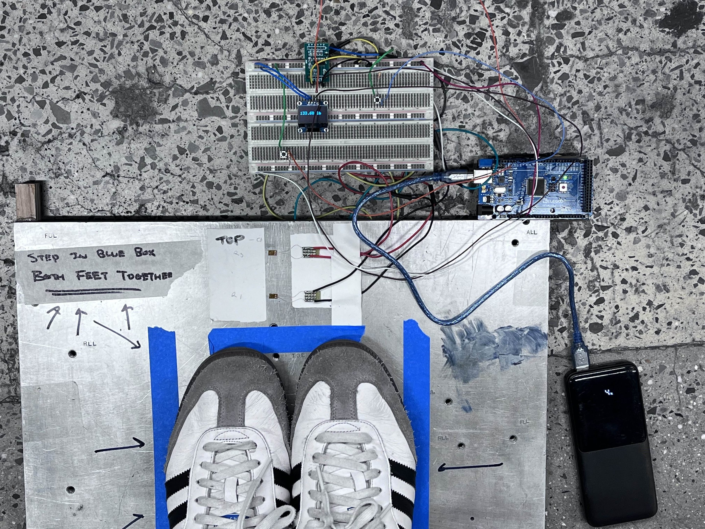

Scale


When you strip down a weighing scale to its raw form, the most important components are the strain gauges. These strain gauges sense changes in resistance as they deform, and this change can be calibrated and measured to give values of significance. Our goal was to create a working scale that is composed of cheap, affordable parts and can be replicated with ease.
The main concept we explored is the Wheatstone bridge; the strain gauges can be wired in a way so that the changes in resistance is converted to a voltage output, which will then be interpreted as weight.
Below is the report that documents the results and analysis of the scale.
View the Arduino code for this project on Github.